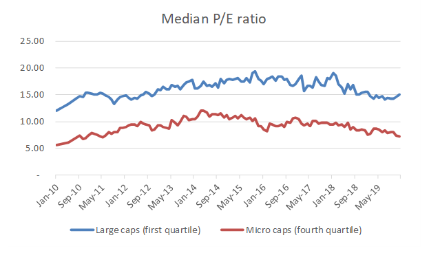
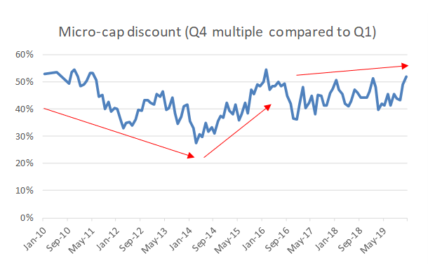

Valuations of South African SME’s hit rock bottom
20/04/2020
keyword keyword keyword
Crest Capital has tracked key pricing metrics of every company listed on the JSE since January 2010. With the erosion of confidence in the South African economy throughout most of the past decade, now exasperated by the fear and uncertainty related to COVID-19, the pricing of South African SME’s has plummeted to fresh lows.
We explore the decline in key pricing metrics, and hence, valuations of local SME’s in two articles, Part 1 dealing with the price performance observed during the past decade, and Part 2, to be released in the last week of April, dealing with the impact on valuations of unfavourable developments in 2020, including COVID-19 and the downgrade of South Africa’s sovereign credit rating to junk status.
Part 1: South African SME valuations end the decade close to 10-year lows
The price/earnings (“P/E”) ratio is an important yardstick when valuing a business, no matter the size or complexity of the entity. It is an accepted fact that, on average, small and medium-sized companies (“SME’s”) trade at a discount to large company shares. Research conducted by Crest Capital over the past 10 years now indicates that the discount applied in the valuation of smaller businesses (“the Small-Stock Discount” or “SSD”) ended the decade close to a 10-year high.
The key takeaway from this research is that the pricing of South African SME’s was suppressed as we started the current decade – even before COVID-19 emerged as a scourge to the global economy and the valuations of businesses worldwide. The impact of COVID-19 on the valuation of SME’s will be discussed in a follow-up article to be published in the last week of April, but for now let’s focus on what has happened to the valuation multiples of South African SME’s during the past decade.
The Price/Earnings valuation methodology
For the purpose of valuing a specific company, a comparator group is selected based on similarities between the company being valued and listed peer-group companies. Factors taken into consideration when defining the comparator group include industry-focus, geographies serviced, common customers and value drivers, and critically, the size of the entity being valued.
Once the comparator group has been defined, a valuation practitioner will calculate the key valuation multiples of the group (including the P/E ratio) and apply these multiples to the subject company’s earnings to determine the value of the business. As such, the average P/E ratio of smaller, JSE-listed companies serves as the starting point for many local SME business valuations.
Smaller companies typically trade at discounted multiples
Studies of publicly traded companies provide compelling evidence that, on average, smaller firms trade at lower P/E ratios than otherwise comparable, larger listed companies. The lower multiples are justified by the greater risk associated with a smaller company, which often includes key customer, supplier or personnel dependency, as well as lack of industry, product and geographical diversification.
During the past decade, Crest has tracked the month-end P/E ratios of every company listed on the JSE. In order to quantify the discount at which smaller companies trade, relative to their larger peers, we stratified the population of JSE-listed companies into four portfolios, as follows:
- 1st quartile – Large cap shares
- 2nd quartile – Medium cap shares
- 3rd quartile – Small cap shares
- 4th quartile – Micro cap shares
SME pricing observations
As at 31 December 2019, the Quartile 1 group (“Large-caps”) had a median market capitalisation of R66.5 billion while the median market capitalisation of the Quartile 4 group (“Micro-caps”) was a mere R385m.
The Q1 portfolio largely comprises multi-national firms, many of which have limited exposure to the South African economy while the Q4 portfolio consists largely of local or Africa-focussed businesses with limited international exposure. The pricing of the Micro-cap portfolio relative to the Large-cap group can therefore be viewed as a proxy for the relative attractiveness of investments in the South African equity market.
As would be expected of smaller companies, the Micro-cap group’s median P/E remained well below the median P/E of the Large-cap group throughout the decade, as can be seen from the chart below. The Micro-cap multiples broadly tracked the movement of the Large-cap portfolio throughout the past decade with a significant discount being observed in all periods.

Between January 2010 and December 2019 the SSD ranged from a low of 28% to a high of 55%, with an average observed SSD of 43%. The chart below highlights key shifts in the SSD during the past decade.

The 2008 financial crisis took its toll on most asset classes but the shares of small companies in emerging markets were amongst the most severely affected. As such, South African Micro-cap stocks entered the past decade on a low median P/E ratio of 5.7 with a significant SSD of 53% being observed in January 2010.
With risk aversion dissipating, the SSD declined steadily from the start of the decade until March 2014 at which point the SSD reduced to just 28%. This trend suggested growing confidence in the future of South African business.
The pro-South Africa sentiment was, however, short-lived and between March 2014 and February 2016, the SSD increased in a linear fashion from 28% to 55%. This coincided with news of slowing economic growth, increasing unemployment and a severe devaluation of the local currency. By February 2016, the median Micro-cap P/E had declined to 8.1 while the Large-cap P/E had strengthened to 17.9. This opened up a significant gap between the pricing of South Africa’s largest and smallest listed companies.
Since February 2016, the SSD remained range bound between 40% and 50% but during the final 6 months of 2019, a decline in the median multiples of the Micro-cap portfolio, coupled with an increase in the Large-cap P/E, resulted in the SSD climbing to 52% in December 2019. The penalty applied to the valuation of South African SME’s therefore ended the decade at close to the peak levels observed during the past decade.
Conclusion
Given the political uncertainty, anaemic growth rate and structural weakness of the South African economy, the steady decline in the average P/E ratio of local SME’s in the past 6 years should not come as a surprise and the data is suggestive of a major reduction in the market values of local businesses in recent times. Buyers and sellers of South African SME’s should, however, proceed with caution…
The well-known adage, “statistics are irrelevant to the individual” must be borne in mind when valuing a privately held business by drawing inference from metrics such as the average P/E ratio of Micro-cap JSE listed companies. While the median Micro-cap P/E ratio equated to 7.2 as at 31 December 2019, 24 of the 67 constituents of the Q4 portfolio had P/E ratios in excess of 10, proving that quality companies do still command premium multiples.
While comparator multiples provide a useful starting point when valuing a South African SME, cognisance needs to be taken of the true value drivers of the subject business, which include:
- the financial health of the business;
- the quality and depth of the management team;
- the earnings trajectory;
- the ability of the business to convert profits into free cash flow; and
- the risks associated with the achievement of the projected results.
At Crest Capital, we pride ourselves on gaining an in-depth understanding of our client’s business and its value drivers and issuing a valuation opinion which captures the true value of the subject company, rather than mechanically applying average or rule of thumb multiples which tend to overvalue weak businesses and undervalue strong ones.
Part 2 to be released on 25 April 2020
In Part 2 of this series, we will take a look at the impact that new challenges which have emerged in 2020, including COVID-19 and the Moody’s rating downgrade, have had on the values of South African SME’s and will provide guidance on factors which need to be taken into account in valuing a business in these uncertain times.